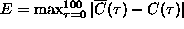
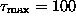
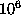
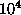

Figure: Progressive stages of the simulated annealing scheme. The data used in Fig. 6 is used to generate an annealed surrogate that minimises  over all permutations of the data. From top to bottom, the values for E are: 0 (original data), 1.01 (random scramble), 0.51, 0.12, 0.015, and 0.00013.
Let us illustrate the use of the annealing method in the case of the standard
null hypothesis of a rescaled linear process. We will show how the periodicity
artefact discussed in Sec. 4.5 can be avoided by using a more
suitable cost function. We prepare a surrogate for the data shown in
Fig. 6 (almost unstable AR(2) process) without truncating its
length. We minimise the cost function given by Eq.(23), involving
all lags up to . Also, we excluded the first and
last points from permutations as a cheap way of imposing the long range
correlation. In Fig. 11 we show progressive stages of the
annealing procedure, starting from a random scramble. The temperature T is
decreased by 0.1% after either  permutations have been tried or 
have been successful. The final surrogate neither has spuriously matching ends
nor the additional high frequency components we saw in Fig. 6. The
price we had to pay was that the generation of one single surrogate took 6 h of
CPU time on a Pentium II PC at 350 MHz. If we had taken care of the long range
correlation by leaving the end points loose but taking  , convergence would have been prohibitively slow. Note that for a
proper test, we would need at least 19 surrogates. We should stress that this
example with its very slow decay of correlations is particularly nasty -- but
still feasible. Obviously, sacrificing 10% of the points to get rid of the
end point mismatch is preferable here to spending several days of CPU time
on the annealing scheme. In other cases, however, we may not have such a
choice.
, convergence would have been prohibitively slow. Note that for a
proper test, we would need at least 19 surrogates. We should stress that this
example with its very slow decay of correlations is particularly nasty -- but
still feasible. Obviously, sacrificing 10% of the points to get rid of the
end point mismatch is preferable here to spending several days of CPU time
on the annealing scheme. In other cases, however, we may not have such a
choice.